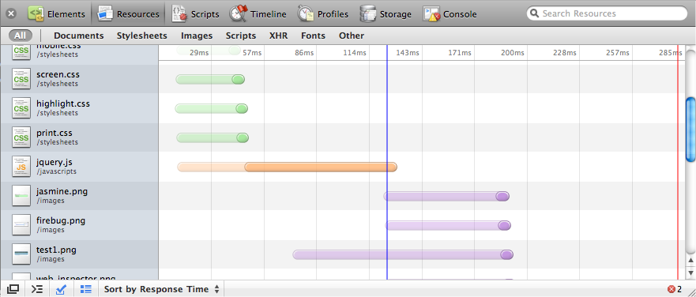
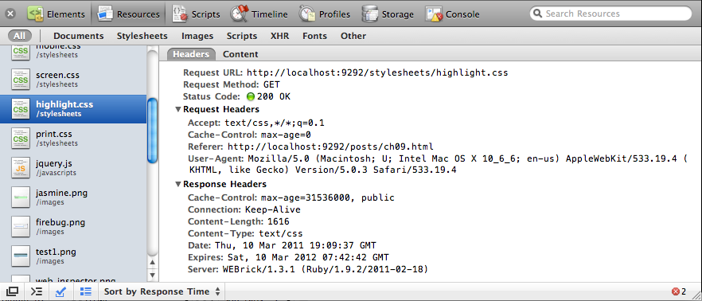

{% include JB/setup %}
{% raw %}
<div>
<div class="book" title="Analyzing Network Requests"><div class="book"><div class="book"><div class="book"><h1 class="title1"><a id="I_sect19_d1e9408" class="calibre1"></a>Analyzing Network Requests</h1></div></div></div><p class="calibre3"><a id="I_indexterm9_d1e9412" class="calibre1"></a><a id="I_indexterm9_d1e9417" class="calibre1"></a><a id="I_indexterm9_d1e9420" class="calibre1"></a>As shown in <a class="ulink" href="ch09s09.html#fig_9_12" title="Figure 9-12. Analyzing network requests with Web Inspector">Figure 9-12</a>, the inspector’s
    network section shows all the HTTP requests the page is making, how long
    they took, and when they completed.</p><div class="book"><div class="figure"><a id="fig_9_12" class="calibre1"></a><div class="book"><div class="book"><a id="I_mediaobject9_d1e9431" class="calibre1"></a></div></div><p class="title4">Figure 9-12. Analyzing network requests with Web Inspector</p></div></div><p class="calibre3">You can see the initial request’s latency, which is a slightly
    transparent color. Then, when data starts getting received, the timeline’s
    color goes opaque. In the example above, jQuery’s file size is much bigger
    than the stylesheets’, so although the initial request latency is similar,
    the script takes longer to download.</p><p class="calibre3">If you’re not using the <code class="literal">async</code> or
    <code class="literal">defer</code> option with your scripts (see
    <a class="ulink" href="ch10.html" title="Chapter 10. Deploying">Chapter 10</a>), you’ll notice that JavaScript files are
    downloaded sequentially rather than in parallel. Scripts are requested
    only after the previous referenced script has been fully downloaded and
    executed. All other resources are downloaded in parallel.</p><p class="calibre3">The lines in the network timeline indicate the pages’ load status.
    The blue line appears at the time the document’s
    <span class="calibre1"><em class="calibre4">DOMContentLoaded</em></span> event <a id="I_indexterm9_d1e9453" class="calibre1"></a><a id="I_indexterm9_d1e9456" class="calibre1"></a>was fired or, in other words, when the DOM is ready. The red
    line appears once the window’s <span class="calibre1"><em class="calibre4">load</em></span> event is
    triggered, when all the page’s images have been fully downloaded and the
    page has finished <span class="calibre1">loading</span>.</p><p class="calibre3">The network section also shows the full request and response headers
    for every request, which is especially useful for making sure any caching
    is being applied correctly. See <a class="ulink" href="ch09s09.html#fig_9_13" title="Figure 9-13. Viewing an in-depth analysis of network requests, such as request and response headers">Figure 9-13</a>.</p><div class="figure"><a id="fig_9_13" class="calibre1"></a><div class="book"><div class="book"><a id="I_mediaobject9_d1e9475" class="calibre1"></a></div></div><p class="title4">Figure 9-13. Viewing an in-depth analysis of network requests, such as request
      and response headers</p></div></div></div>

{% endraw %}

